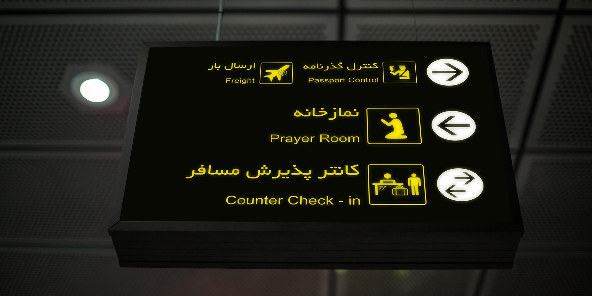

Test 1
Loading…
images/artino/signage/artino-signage-dimensional-lettering-logo-signage-a-sgn-001-detail-01.jpgProtocol:
Loading…
images/artino/signage/artino-signage-dimensional-lettering-logo-signage-a-sgn-001-detail-01.jpg
Loading…
images/inoway/airport/inoway-airport-airport-wayfinding-identification-i-air-001-detail-01.jpgLoading…
images/projects/project-airport-city-wayfinding-p-ikac-001-01.jpgIf direct file loading fails, the catalog itself should still render these images through its local fallback layer.